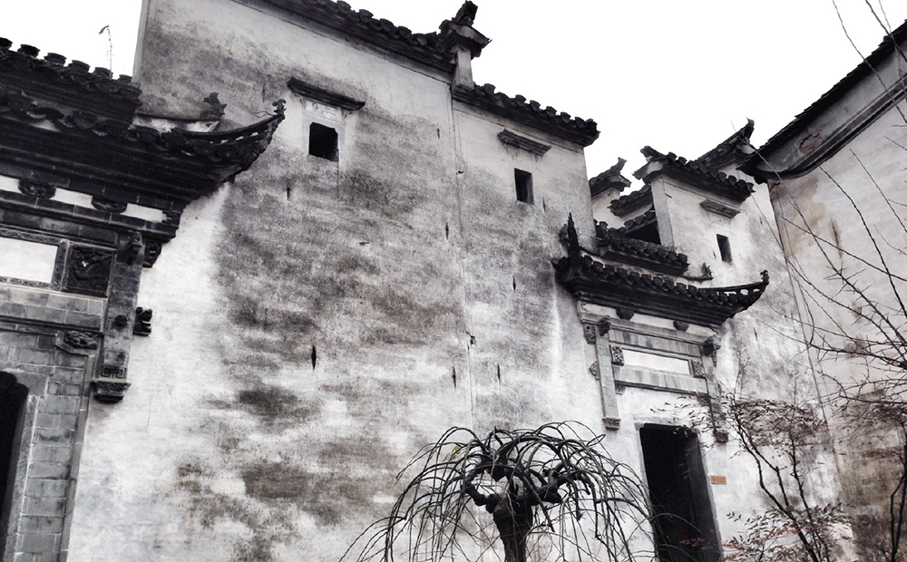

·古城岩介绍
古城岩，坐落在休宁县万安镇东侧，以众多的古迹遗址、悠久的历史传承和寿山旭日的奇特景观而闻名于世。是国家AAA级景区。
景区内的古牌坊、古民居、古祠堂、古庙、古门楼、古牌楼、古桥、古塔等和汪王故宫、朱元璋避难洞、练心石、半亭、方丛竹等遗址及气势宏伟的万寿塔和谐布局，互为映衬，历史文化与自然山水完美融合，充分显示了古徽州古朴隽逸的风貌，精彩趣味的石雕、木雕、墨坊、罗盘制作等游客参与节目及具有浓郁地方特色的民间艺术表演，更让游客如痴如醉，宛如走进了遥远的明清社会。
古城岩中有一象峰耸立于寿山右侧。巨象蹲伏，石鼻前伸，惟妙惟肖，下有石门夹峙，如双鹤引颈入崖内，俗称交杯石。山间藏有天然岩洞，相传朱元璋与陈友谅称雄角逐败北，曾避难于洞内。蜘蛛结网封洞口，朱元璋因此获救。山左前为狮峰，雄峙汶溪之滨。峰顶有巨岩悬突，上部略平，宽广近10米，名“练心石”，传为明末抗清英雄金声练剑处。山南旧有徽派园林，建筑典雅，名丰亭，门额题“溪山一览”。内设宽敞茶座，对景品茗，聊增游兴。园中广植花木，树影婆娑，修篁凌风，石台中植方竹丛，其竹上圆下方，苍虬可喜。一石岩间辟棋室，供人对弈。室外为交通大道，石板铺就，光洁平整。路旁石栏下，溪水聚汇成潭，昔为养鱼放生处，鱼大如长凳。路北有董其昌题“鱼乐园”三个径尺大字，刻石嵌于墙壁。狮峰左有文笔峰，峰巅筑七级浮屠，曰万寿塔。南麓有如虹卧波的大石桥，曰水南桥。昔有“汪王故宫”、“还古书院”，今已圮。
1998年，开发古城岩风景区将散落于全县各地的7幢明清古宅，修旧如旧，在狮峰下，依山就势，比肩竖立，重新焕发出古老徽派建筑的青春魅力；分布于各村镇要塞、水口的5座石牌坊，井然有序地集合于古城大道，以它们坚韧的个性，展示着不老的容颜。
景区内的罗盘、徽墨、石雕、木刻、竹雕等老作坊，形成一条小街，再现了“罗盘之乡”、“徽墨之乡”、“三雕之乡”的文化韵味和精湛工艺。
- 